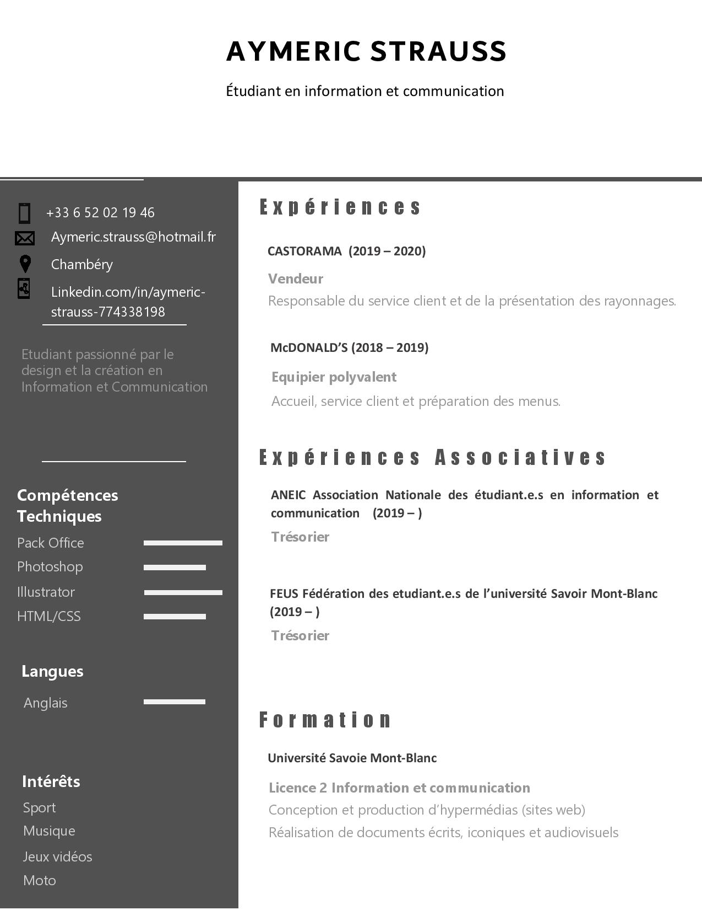

A propos de moi
JE M’APPELLE AYMERIC STRAUSS, 22 ANS ET ÉTUDIANT EN INFORMATION COMMUNICATION À L’UNIVERSITÉ SAVOIE MONT BLANC. Mes compétences
HTML & CSS
Je suis capable de coder en HTML et CSS pour la réalisation de site web comme celui-ci.
Adobe
Je maitrise les logiciels de la suite adobe tel que Illustrator, Photoshop mais aussi Première pro et After Effects.
Blender
Je sais utiliser des logiciels de création 3D tel que Blender et Solidworks pour réaliser des oeuvres artistiques mais aussi pour réaliser de la VR.
Dessin
Je dessine essentiellement au crayon à papier et aux marqueurs type poska.
Oeuvres
Il s'agit ici de quelques oeuvres que j'ai réalisé avec l'aide de différents outils. Vous pouvez retrouver le reste de mes oeuvres et projets sur mon Portfolio : Cliquez iciMedusa
Ce dessin a été réalisé avec l'aide d'un modèle sur une feuille A4, pour le faire j'ai utilisé un micro pointe 0.3mm, des crayon noit HB, 4B et 6B ainsi qu'un stylo blanc.Ils vous observent
Cette oeuvre est une création faite sur Blender. Nous avions comme consigne "Ils vous observent", j'ai donc créé deux oeils qui se regardent à travers une loupe. Cette création utilise les outils de base de Blender.Monde parrallèle
Pour ce projet, j'ai essayé d'imaginer ce qu'il pouvait se passer dans un monde parrallèle, j'ai modélisé un terrain et une pyramide avec un design très futuriste. Cette pyramide passe à travers un portail afin de passer dans "le monde". J'ai aussi essayé de jouer avec les lumières pour accentuer l'ambiance science-fiction.Portrait
Ce portrait a été entièrement réalisé sur Illustrator avec l'aide de l'outil "plume", j'ai ici refait le portrait d'une autre étudiante à partir d'une photo.


{kind=link}
{kind=link}
{kind=link}
{kind=link}
{kind=link}
{kind=link}
{kind=link}